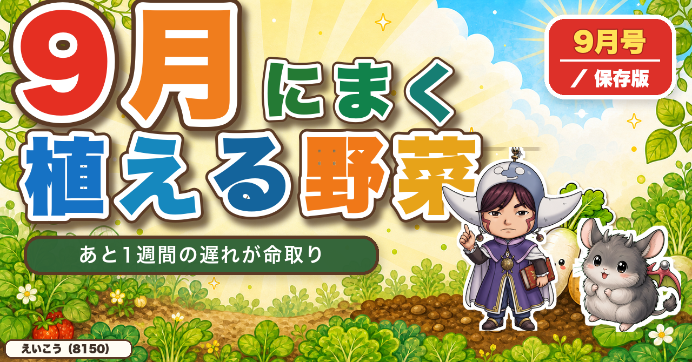

HOME GARDEN NOTE
育てて、学んで、おいしい。
家庭菜園歴8年・理科の教員免許を持つ、えいこう（8150）のブログ。有機・無農薬の野菜づくりを、失敗談と身近な理科をまじえて初心者向けにやさしくお話しします。

🌞 今月の必読
【9月にまく・植える野菜】あと1週間の遅れが、冬の食卓を変えます🌱
野菜は10℃を下回ると成長を止めるので、秋の1週間の遅れは取り返せません。大根は9月中旬まで、ほうれん草は石灰とタネの深さが命。ニンニクとらっきょうは9月にしか植えられません。
続きを読む →